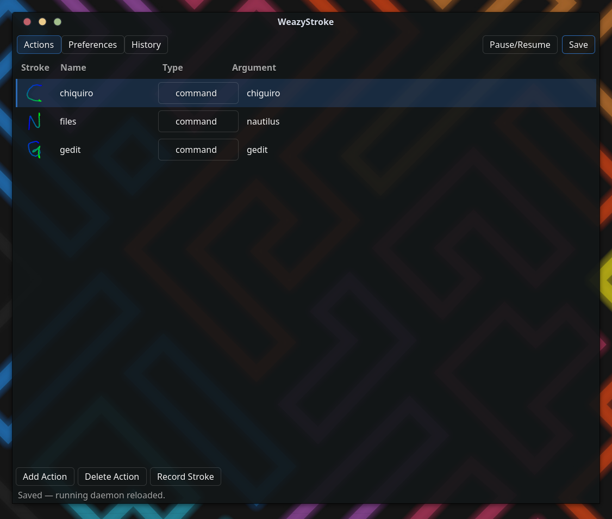

Design and technical reference for WeazyStroke — gesture recognition for Wayland. Last updated 2026-06-30.
WeazyStroke is four small processes: an input engine (eswl-daemon), a live
trail renderer (eswl-overlay), a GTK4 + libadwaita config GUI
(eswl-config), and a system-tray helper (eswl-tray). The engine
links no GUI toolkit at all — it captures mouse, pen, stylus, and touch through
libinput/libevdev, matches strokes with a recognition core recycled
verbatim from the classic easystroke, and
injects actions through uinput. The renderer and tray run as supervised child
processes behind tiny line protocols; the GUI coordinates through one shared JSON file and a
reload signal. These pages document each piece from its real implementation.

stroke.c core: arc-length normalization, the constrained-DP matcher, scoring, and multi-example templates.uinput injector, the xkbcommon keymap, and button / scroll handling.
WeazyStroke by Jordan Johnston — github.com/nine7nine/WeazyStroke
Gesture recognition for Wayland | recognition core from easystroke by Thomas Jaeger | 2026-06-30